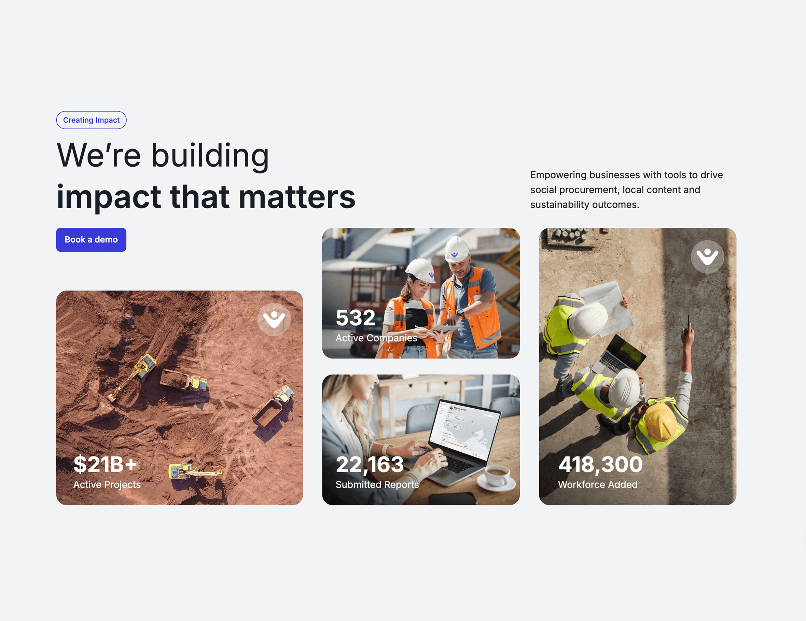
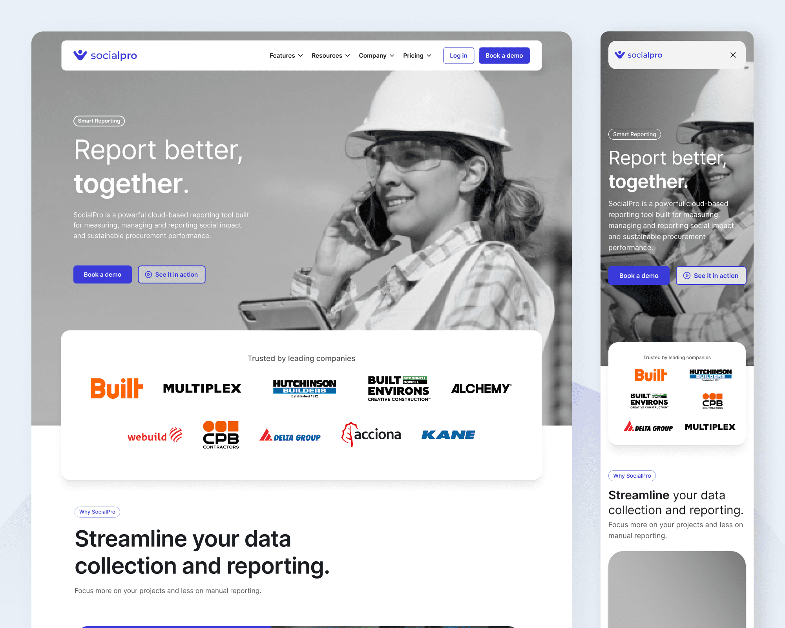
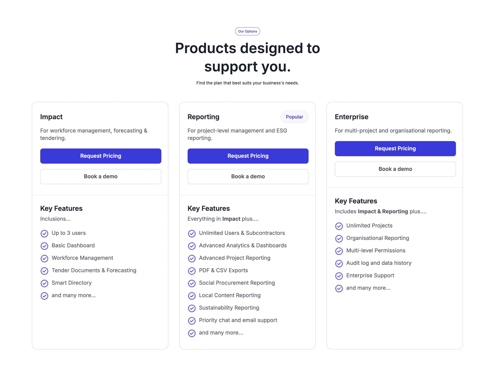

SocialPro's website had unclear messaging, buried CTAs, and generic illustrations instead of product screenshots. I redesigned it into a conversion-focused platform — demo requests jumped 13%.

The Problem
Messaging didn't connect SocialPro to real business pain points.
"Book a Demo" lacked prominence and hid below the fold.
Abstract art replaced real product screenshots, reducing credibility with enterprise buyers.
Disjointed typography, colors, and layouts undermined trust.
Analysis
"Hidden CTAs made booking demos unclear. Generic illustrations failed to showcase platform value. Inconsistent visuals reduced professionalism and trust."
— UX audit findings, stakeholder alignment session
Design Solutions
"Book a Demo" now appears at every stage of the page. Added client logos immediately below the hero to build credibility before users even scroll.
Replaced all generic illustrations with actual platform screens. A feature grid highlights productivity, employee management, social procurement, and reporting.
Clear product tiers with feature breakdowns for quick comparison. Custom quote option for enterprise clients with complex needs.
Unified typography, color palette, and component library applied across every page — ending the visual fragmentation that was undermining trust.

Hard Decision
Stakeholders wanted to keep illustrations. I pushed for 100% real screenshots — enterprise B2B buyers need to see the actual product before committing to a demo call.

Validation
All 6 reported the new navigation as "much clearer" — with particular praise for CTA visibility and pricing page structure.
Impact
13% increase in conversions with a measurable jump in demo requests. The consistent design system also reduced future design and dev time for new pages.
"From day one, Asim brought a sharp eye for detail, creativity, and a genuine commitment to building user-friendly experiences. I'd recommend him to any organisation looking for a thoughtful, innovative, and dependable designer."Taylor Jenkins · Co-Founder, SocialPro